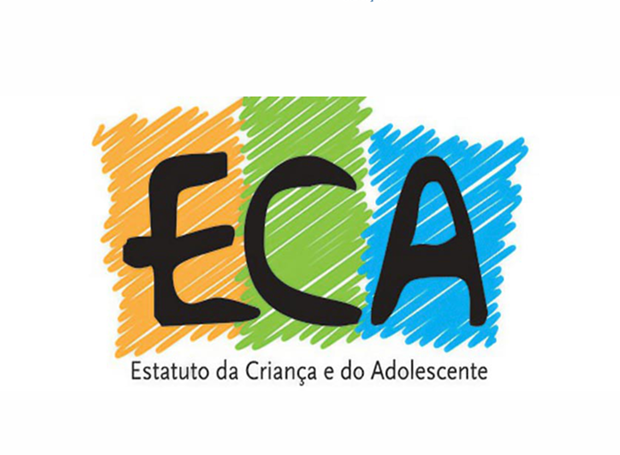

Artigos Recentes
Carregando artigos...
Nenhum artigo recente encontrado.
{{ post.titulo }}
{{ post.subtitulo }}
Seja bem-vindo! Este site é uma iniciativa do projeto de extensão do Centro Universitário Leonardo da Vinci - Uniasselvi, dedicado a informar sobre conselho tutelar e fortalecer a rede de proteção à infância e adolescência.
Nosso principal objetivo é ser uma ponte entre a comunidade e o conhecimento sobre o Estatuto da Criança e do Adolescente (ECA) e o papel vital do Conselho Tutelar. Acreditamos que a informação clara e acessível é a ferramenta mais poderosa para garantir direitos.
Explore nossos artigos, guias e materiais para entender como o Conselho Tutelar funciona, quando você deve acioná-lo e como todos nós podemos —e devemos— atuar na defesa de um futuro mais seguro para nossas crianças e adolescentes.

Carregando artigos...
Nenhum artigo recente encontrado.
{{ post.subtitulo }}